ivechessian
Vector Hessian of a multivariate, vector-valued function using the complex-step and central difference approximations.
Back to Numerical Differentiation Toolbox Contents.
Contents
Syntax
H = ivechessian(f,x0) H = ivechessian(f,x0,hi,hc)
Description
H = ivechessian(f,x0) numerically evaluates the vector Hessian of 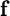 with respect to 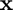 at 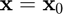 using a hybrid of complex-step and central difference approximations with default relative step sizes of 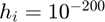 and 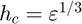, respectively, where 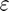 is the machine zero.
H = ivechessian(f,x0,hi,hc) numerically evaluates the vector Hessian of with respect to at using a hybrid of complex-step and central difference approximations with user-specified relative step sizes 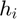 and 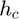, respectively.
Input/Output Parameters
| Variable | Symbol | Description | Format | |
| Input | f | multivariate, vector-valued function ( |
1×1 function_handle |
|
| x0 | evaluation point | n×1 double |
||
| hi | (OPTIONAL) step size for complex-step approximation (defaults to |
1×1 double |
||
| hc | (OPTIONAL) relative step size for central difference approximation (defaults to |
1×1 double |
||
| Output | H | vector Hessian of |
n×n×m double |
Note
- This function requires 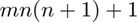 evaluations of 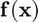.
Example
Approximate the vector Hessian of
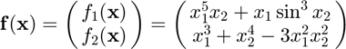
at 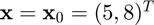 using the ivechessian function, and compare the result to the true result of
where
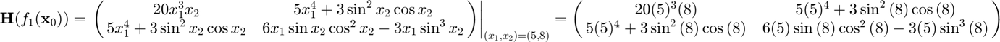
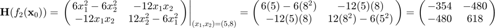
Approximating the Hessian,
f = @(x) [x(1)^5*x(2)+x(1)*sin(x(2))^3;
x(1)^3+x(2)^4-3*x(1)^2*x(2)^2];
x0 = [5;8];
H = ivechessian(f,x0)
H(:,:,1) =
1.0e+04 *
2.0000 0.3125
0.3125 -0.0014
H(:,:,2) =
-354.0000 -480.0000
-480.0000 618.0000
Defining the true vector Hessian,
H_true = zeros(2,2,2);
H_true(:,:,1) = [20*5^3*8,5*5^4+3*sin(8)^2*cos(8);5*5^4+3*sin(8)^2*...
cos(8),6*5*sin(8)*cos(8)^2-3*5*sin(8)^3];
H_true(:,:,2) = [-354,-480;-480,618];
Calculating the errors,
error = H-H_true
error(:,:,1) =
1.0e-05 *
0.1036 0.0011
0.0011 0.0049
error(:,:,2) =
1.0e-07 *
0.0533 0.0095
0.0095 0.1131